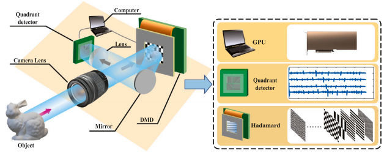
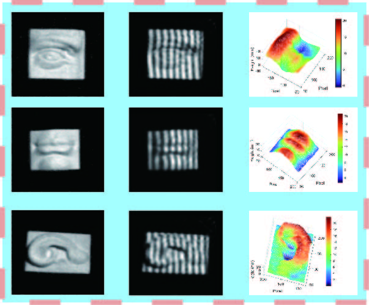
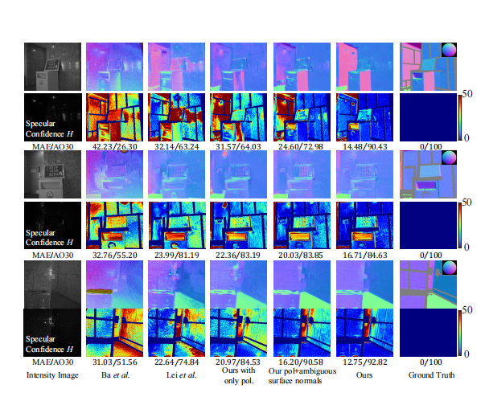

Optics & Laser Technology, 2026
Shape from polarization via ultra-low-sampling single-pixel imaging with decoupled spatial and polarimetric dimensions
Cited by 0Semantic Scholar, Sep 2026
Computational imaging researcher
Ph.D. candidate, School of Physics
Northeast Normal University
I work on computational imaging and polarization-based 3D imaging, with a focus on efficient acquisition and robust reconstruction.
Selected work

Optics & Laser Technology, 2026
Cited by 0Semantic Scholar, Sep 2026

Optics and Lasers in Engineering, 2025
Cited by 8Semantic Scholar, Sep 2026

Optics Express, 2025
Cited by 3Semantic Scholar, Sep 2026
Academic path
Ph.D.
School of Physics, Northeast Normal University
M.Sc.
School of Physics, Northeast Normal University
B.Sc.
School of Physics, Northeast Normal University
Recognition
Internship
Changchun Institute of Optics, Fine Mechanics and Physics, Chinese Academy of Sciences, Jul - Aug 2023